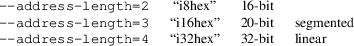
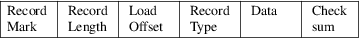
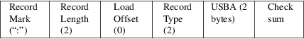
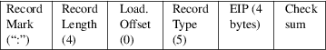
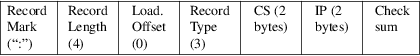
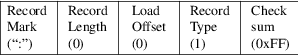

srec_intel - Intel Hexadecimal object file format specification
This format is also known as the Intel MCS-86 Object format.
This document describes the hexadecimal object file format for the Intel 8-bit, 16-bit, and 32-bit microprocessors. The hexadecimal format is suitable as input to PROM programmers or hardware emulators.
Hexadecimal object file format is a way of representing an absolute binary object file in ASCII. Because the file is in ASCII instead of binary, it is possible to store the file is non-binary medium such as paper-tape, punch cards, etc.; and the file can also be displayed on CRT terminals, line printers, etc.. The 8-bit hexadecimal object file format allows for the placement of code and data within the 16-bit linear address space of the Intel 8-bit processors. The 16-bit hexadecimal format allows for the 20-bit segmented address space of the Intel 16-bit processors. And the 32-bit format allows for the 32-bit linear address space of the Intel 32-bit processors.

The hexadecimal representation of binary is coded in ASCII alphanumeric characters. For example, the 8-bit binary value 0011-1111 is 3F in hexadecimal. To code this in ASCII, one 8-bit byte containing the ASCII code for the character ’3’ (0011-0011 or 0x33) and one 8-bit byte containing the) ASCII code for the character ’F’ (0100-0110 or 0x46) are required. For each byte value, the high-order hexadecimal digit is always the first digit of the pair of hexadecimal digits. This representation (ASCII hexadecimal) requires twice as many bytes as the binary representation.
A hexadecimal object file is blocked into records, each of which contains the record type, length, memory load address and checksum in addition to the data. There are currently six (6) different types of records that are defined, not all combinations of these records are meaningful, however. The record are:
|
• |
Data Record (8-, 16-, or 32-bit formats) |
|||
|
• |
End of File Record (8-, 16-, or 32-bit formats) |
|||
|
• |
Extended Segment Address Record (16- or 32-bit formats) |
|||
|
• |
Start Segment Address Record (16- or 32-bit formats) |
|||
|
• |
Extended Linear Address Record (32-bit format only) |
|||
|
• |
Start Linear Address Record (32-bit format only) |
General Record Format

Record Mark.
Each record begins with a Record Mark field containing 0x3A, the ASCII code for the colon (“:”) character.
Record Length
Each record has a Record Length field which specifies the number of bytes of information or data which follows the Record Type field of the record. This field is one byte, represented as two hexadecimal characters. The maximum value of the Record Length field is hexadecimal ’FF’ or 255.
Load Offset
Each record has a Load Offset field which specifies the 16-bit starting load offset of the data bytes, therefore this field is only used for Data Records. In other records where this field is not used, it should be coded as four ASCII zero characters (“0000” or 0x30303030). This field is two byte, represented as four hexadecimal characters.
Record Type
Each record has a Record Type field which specifies the record type of this record. The Record Type field is used to interpret the remaining information within the record. This field is one byte, represented as two hexadecimal characters. The encoding for all the current record types are:
|
0 |
Data Record |
|||
|
1 |
End of File Record |
|||
|
2 |
Extended Segment Address Record |
|||
|
3 |
Start Segment Address Record |
|||
|
4 |
Extended Linear Address Record |
|||
|
5 |
Start Linear Address Record |
|||
|
Data |
Each record has a variable length Data field, it consists of zero or more bytes encoded as pairs of hexadecimal digits. The interpretation of this field depends on the Record Type field.
Checksum
Each record ends with a Checksum field that contains the ASCII hexadecimal representation of the two’s complement of the 8-bit bytes that result from converting each pair of ASCII hexadecimal digits to one byte of binary, from and including the Record Length field to and including the last byte of the Data field. Therefore, the sum of all the ASCII pairs in a record after converting to binary, from the Record Length field to and including the Checksum field, is zero.
Extended
Linear Address Record
(32-bit format only)
The 32-bit Extended Linear Address Record is used to specify bits 16-31 of the Linear Base Address (LBA), where bits 0-15 of the LBA are zero. Bits 16-31 of the LBA are referred to as the Upper Linear Base Address (ULBA). The absolute memory address of a content byte in a subsequent Data Record is) obtained by adding the LBA to an offset calculated by adding the Load Offset field of the containing Data Record to the index of the byte in the Data Record (0, 1, 2, ... n). This offset addition is done) modulo 4G (i.e. 32-bits from 0xFFFFFFFF to 0x00000000) results in wrapping around from the end to the beginning of the 4G linear address defined by the LBA. The linear address at which a particular byte is loaded is calculated as:
(LBA + DRLO + DRI) MOD 4G
where:
|
DRLO |
is the Load Offset field of a Data Record. | ||
|
DRI |
is the data byte index within the Data Record. |
When an Extended Linear Address
Record defines the value of LBA, it may appear anywhere
within a 32-bit hexadecimal object file. This value remains
in effect until another Extended Linear Address Record is
encountered. The LBA defaults to zero until an Extended
Linear Address Record is encountered. The contents of the
individual fields within the record are:
Record Mark
This field contains 0x3A, the hexadecimal encoding of the ASCII colon (“:”) character.
Record Length
The field contains 0x3032, the hexadecimal encoding of the ASCII characters “02”, which is the length, in bytes, of the ULBA data information within this record.
Load Offset
This field contains 0x30303030, the hexadecimal encoding of the ASCII characters “0000”, since this field is not used for this record.
Record Type
This field contains 0x3034, the hexadecimal encoding of the ASCII character “04”, which specifies the record type to be an Extended Linear Address Record.
|
ULBA |
This field contains four ASCII hexadecimal digits that specify the 16-bit Upper Linear Base Address value. The value is encoded big-endian (most significant digit first). |
Checksum
This field contains the check sum on the Record Length, Load Offset, Record Type, and ULBA fields.
Extended
Segment Address Record
(16- or 32-bit formats)

The 16-bit Extended Segment Address Record is used to specify bits 4-19 of the Segment Base Address (SBA), where bits 0-3 of the SBA are zero. Bits 4-19 of the SBA are referred to as the Upper Segment Base Address (USBA). The absolute memory address of a content byte in a subsequent Data Record is) obtained by adding the SBA to an offset calculated by adding the Load Offset field of the containing Data Record to the index of the byte in the Data Record (0, 1, 2, ... n). This offset addition is done modulo 64K (i.e. 16-bits from 0xFFFF to 0x0000 results in wrapping around from the end to the beginning of the 64K segment defined by the SBA. The address at which a particular byte is loaded is calculated as:
SBA + ((DRLO + DRI) MOD 64K)
where:
|
DRLO |
is the LOAD OFFSET field of a Data Record. | ||
|
DRI |
is the data byte index within the Data Record. |
When an Extended Segment Address Record defines the value of SBA, it may appear anywhere within a 16-bit hexadecimal object file. This value remains in effect until another Extended Segment Address Record is encountered. The SBA defaults to zero until an Extended Segment Address Record is encountered.
The contents of
the individual fields within the record are:
Record Mark
This field contains 0x3A, the hexadecimal encoding of the ASCII colon (“:”) character.
Record Length
The field contains 0x3032, the hexadecimal encoding of the ASCII characters ’02’, which is the length, in bytes, of the USBA data information within this record.
Load Offset
This field contains 0x30303030, the hexadecimal encoding of the ASCII characters ’0000’, since this field is not used for this record.
Record Type
This field contains 0x3032, the hexadecimal encoding of the ASCII character “02”, which specifies the record type to be an Extended Segment Address Record.
|
USBA |
This field contains four ASCII hexadecimal digits that specify the 16-bit Upper Segment Base Address value. The field is encoded big-endian (most significant digit first). |
Checksum
This field contains the check sum on the Record length, Load Offset, Record Type, and USBA fields.
Data
Record
(8-, 16- or 32-bit formats)
The Data Record provides a set of hexadecimal digits that represent the ASCII code for data bytes that make up a portion of a memory image. The method for calculating the absolute address (linear in the 8-bit and 32-bit case and segmented in the 16-bit case) for each byte of data is described in the discussions of the Extended Linear Address Record and the Extended Segment Address Record.
The contents of
the individual fields within the record are:
Record Mark
This field contains 0x3A, the hexadecimal encoding of the ASCII colon (“:”) character.
Record Length
The field contains two ASCII hexadecimal digits that specify the number of data bytes in the record. The maximum value is 255 decimal.
Load Offset
This field contains four ASCII hexadecimal digits representing the offset from the LBA (see Extended Linear Address Record see Extended Segment Address Record) defining the address which the first byte of the data is to be placed.
Record Type
This field contains 0x3030, the hexadecimal encoding of the ASCII character “00”, which specifies the record type to be a Data Record.
|
Data |
This field contains pairs of ASCII hexadecimal digits, one pair for each data byte. |
Checksum
This field contains the check sum on the Record Length, Load Offset, Record Type, and Data fields.
Note: Care must be taken when the addresses with an record span the end of addressing. The behaviour is different for linear and segmented addressing modes.
|
linear |
If a record starts just short of 2**32, and would finish after 2**32, the later part of the record wraps around to address 0. TP 8n segment If a record starts just for of a 2**16 boundary, and would finish after that 2**16 boundary, the later part of the record wraps around to address 0 within the same segment (not the next segment). |
The srec_cat(1) program will never output records such as these, it will always produce separate records on output.
Start Linear
Address Record
(32-bit format only)

The Start Linear Address Record is used to specify the execution start address for the object file. The value given is the 32-bit linear address for the EIP register. Note that this record only specifies the code address within the 32-bit linear address space of the 80386. If the code is to start execution in the real mode of the 80386, then the Start Segment Address Record should be used instead, since that record specifies both the CS and IP register contents necessary for real mode.
The Start Linear Address Record can appear anywhere in a 32-bit hexadecimal object file. If such a record is not present in a hexadecimal object file, a loader is free to assign a default execution start address.
The contents of
the individual fields within the record are:
Record mark
This field contains 0x3A, the hexadecimal encoding of the ASCII colon (“:”) character.
Record length
The field contains 0x3034, the hexadecimal encoding of the ASCII characters “04”, which is the length, in bytes, of the EIP register content within this record.
Load Offset
This field contains 0x30303030, the hexadecimal encoding of the ASCII characters “0000”, since this field is not used for this record.
Record Type
This field contains 0x3035, the hexadecimal encoding of the ASCII character “05”, which specifies the record type to be a Start Linear Address Record.
|
EIP |
This field contains eight ASCII hexadecimal digits that specify the 32-bit EIP register contents. The field is encoded big-endian (most significant digit first). |
Checksum
This field contains the check sum on the Record length, Load Offset, Record Type, and EIP fields.
Start
Segment Address Record
(16- or 32-bit formats)

The Start Segment Address Record is used to specify the execution start address for the object file. The value given is the 20-bit segment address for the CS and IP registers. Note that this record only specifies the code address within the 20-bit segmented address space of the 8086/80186. The Start Segment Address Record can appear anywhere in a 16-bit hexadecimal object file. If such a record is not present in a hexadecimal object file, a loader is free to assign a default start address.
The contents of
the individual fields within the record are:
Record Mark
This field contains 0x3A, the hexadecimal encoding of the ASCII colon (“:”) character.
Record Length
The field contains 0x3034, the hexadecimal encoding of the ASCII characters “04”, which is the length, in bytes, of the CS and IP register contents within this record.
Load Offset
This field contains 0x30303030, the hexadecimal encoding of the ASCII characters “0000”, since this field is not used for this record.
Record Type
This field contains 0x3033, the hexadecimal encoding of the ASCII character ’03’, which specifies the record type to be a Start Segment Address Record.
|
CS |
This field contains four ASCII hexadecimal digits that specify the 16-bit CS register contents. The field is encoded big-endian (most significant digit first). | ||
|
IP |
This field contains four ASCII hexadecimal digits that specify the 16-bit IP register contents. The field is encoded big-endian (most significant digit first). |
Checksum
This field contains the check sum on the Record length, Load Offset, Record Type, CS, and IP fields.
End of File
Record
(8-, 16-, or 32-bit formats)

The End of File Record specifies the end of the hexadecimal object file.
The contents of
the individual fields within the record are:
Record mark
This field contains 0x3A, the hexadecimal encoding of the ASCII colon (“:”) character.
Record Length
The field contains 0x3030, the hexadecimal encoding of the ASCII characters “00”. Since this record does not contain any Data bytes, the length is zero.
Load Offset
This field contains 0x30303030, the hexadecimal encoding of the ASCII characters “0000”, since this field is not used for this record. In ancient times, i8hex used this for the start address record.
Record Type
This field contains 0x3031, the hexadecimal encoding of the ASCII character “01”, which specifies the record type to be an End of File Record.
Checksum
This field contains the check sum an the Record Length, Load Offset, and Record Type fields. Since all the fields are static, the check sum can also be calculated statically, and the value is 0x4646, the hexadecimal encoding of the ASCII characters “FF”.
Size
Multiplier
In general, binary data will expand in sized by
approximately 2.3 times when represented with this
format.
Here is an example Intel hex file. It contains the data “Hello, World” to be loaded at address 0.
:0D00000048656C6C6F2C20576F726C640AA1
:00000001FF
This information comes (very indirectly) from Microprocessors and Programmed Logic, Second Edition, Kenneth L. Short, 1987, Prentice-Hall, ISBN 0-13-580606-2.
http://en.wikipedia.org/wiki/Intel_HEX
srec_cat
version 1.65
Copyright (C) 1998, 1999, 2000, 2001, 2002, 2003, 2004,
2005, 2006, 2007, 2008, 2009, 2010, 2011, 2012, 2013, 2014,
2018, 2019, 2022 Peter Miller
The srec_cat program comes with ABSOLUTELY NO WARRANTY; for details use the ’srec_cat -VERSion License’ command. This is free software and you are welcome to redistribute it under certain conditions; for details use the ’srec_cat -VERSion License’ command.

Derivation
This manual page is derived from a file marked as
follows:
Intel Hexadecimal Object File Format Specification; Revision A, 1/6/88
Disclaimer: Intel makes no representation or warranties with respect to the contents hereof and specifically disclaims any implied warranties of merchantability or fitness for any particular purpose. Further, Intel reserves the right to revise this publication from time to time in the content hereof without obligation of Intel to notify any person of such revision or changes. The publication of this specification should not be construed as a commitment on Intel’s part to implement any product.